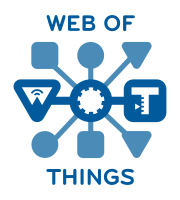

WoT CG Meetup 2024-10-14
using  Thing Models
as a basis to make to housing sector smart and energy-efficient
Date: 14.10.2024, by Thomas Jäckle (@thjaeckle)
about
- digitizing real estate / the housing sector
- young IoT startup (< 3 years)
- part of the Noventic group
- connecting different types of devices to our own IoT backend
- HQ: Hamburg, Germany - employees (>100) all over Europe
about me
- Software Engineer
- Lead of IoT Foundation @beyonnex.io
- formerly invited expert and participating for Bosch in WoT WG
- project lead and main committer of Eclipse Ditto™, an IoT middleware and digital twin framework

- our world: millions of private households in apartment blocks in the housing industry
- our customers: the housing companies / landlords
- residents use the devices as a service
(think of: battery, connectivity, maintenance)
submetering devices
collect and allocate heat/water consumption of residents
smart heating devices
give residents more control over their heat consumption via App or manually
how are those devices connected?
- Meter-Bus (European standard for the remote reading of water, gas or electricity meters)
- uni-directional
- technology using license-free radio frequency band to connect many
devices with few gateways over a Long Range, aiming for low power consumption of end devices
- bi-directional
-> our devices are most of the time offline
device environment
- especially in the housing sector, the device's environment is important
- where (building, apartment, etc.) are devices installed?
- to which customer ("owner") do they belong?
Generated with Microsoft Bing Copilot
- who is the current resident allowed to control e.g. thermostats?
special challenges to solve
- heterogeneous device types
- devices mostly offline
- different user groups (e.g. residents, installers, operators/supporters)
- multiple development teams
- either connecting "their" device types
- or using device functionality (e.g. for mobile apps or operator/support dashboards)
a solution: Digital Twin
- providing APIs for accessing device data and sending commands
- abstracting from protocols devices are connected with
- handling access control for various user groups
- enabling higher order twins for rooms, apartments, buildings
Generated with Microsoft Bing Copilot
- used by various different development teams as IoT middleware
Eclipse Ditto in a nutshell

Eclipse Ditto in context

Ditto as
IoT
and/or
Digital Twin
"middleware"
device data as APIs
{
"thingId": "io.beyonnex.srt:my-srt",
"policyId": "io.beyonnex.room:my-room",
"attributes": {
"serial": "4711-0815",
"location": {
"buildingId": "nice-building"
}
},
"features": {
"temp": {
"properties": {
"value": 23.42
}
}
}
}JSON repr. of a Thing
GET/PUT/PATCH/DELETE /things/io.beyonnex.srt:my-srt
/things/io.beyonnex.srt:my-srt/thingId
/things/io.beyonnex.srt:my-srt/policyId
/things/io.beyonnex.srt:my-srt/attributes
/things/io.beyonnex.srt:my-srt/attributes/serial
/things/io.beyonnex.srt:my-srt/attributes/location
/things/io.beyonnex.srt:my-srt/attributes/location/buildingId
/things/io.beyonnex.srt:my-srt/features
/things/io.beyonnex.srt:my-srt/features/temp
/things/io.beyonnex.srt:my-srt/features/temp/properties
/things/io.beyonnex.srt:my-srt/features/temp/properties/value
HTTP API of the Thing
Ditto's WoT integration
a Ditto managed digital twin (a.k.a "thing") can reference a (WoT Thing) model
{
"thingId": "io.beyonnex.srt:my-srt",
"definition": "https://models.some.domain.org/thermostat-1.2.0.tm.jsonld"
}- upon thing creation, a JSON skeleton is generated based on the defined model
properties - for each thing, a WoT Thing Description is generated (on the fly) based on model, providing HTTP
formsfor definedproperties, actions, events - new (since Ditto 3.6.0): validation of thing (
properties) modifications andaction+eventpayload based on WoT TM
TM based thing validation
- Ditto now can ensure that interaction with a twin always adheres to the defined model
- reasoning: programming errors happen - and can now already be detected early during development
PUT https://ditto.host/api/2/things/io.beyonnex.thermostat:my-t1/attributes/serial
false
{
"status": 400,
"error": "wot:payload.validation.error",
"message": "The provided payload did not conform to the specified WoT (Web of Things) model.",
"description": "The Thing's attribute </serial> contained validation errors, check the validation details.",
"validationDetails": {
"/attributes/serial": [
": {type=boolean found, string expected}"
]
}
}- also for e.g. action "input" payloads, guiding 3rd party users of published twin API with helpful error messages
Thing Models and how we use them
- in our Thing Models, we use inheritance
(
tm:extends) and composition (tm:submodel), applying "object-oriented" modeling, e.g.:- a thermostat is-a device, a device is aware of its location
- a thermostat has-a functionality regarding temperature control, child lock and battery usage
- a room as well has-a functionality regarding temperature control (but not child lock and battery usage)
- occasionally as well importing single capabilities cross-model (using
tm:ref)
modeled as class diagram
how we create models
- write new
(or copy&paste from existing ones) TMs in our favorite IDE - apply semantic versioning
- commit and push TMs to version control (Git)
- CI/CD pipeline automatically publishes TMs to a "development" website
- Git tags to release TMs
- released TMs are deployed to a QA and productive website
model tooling: OpenAPI generation
- writing/enhancing TMs is hard
- reading TMs also needs quite some understanding
- so we created some tooling to help our development teams
- generating OpenAPI definition for complete Ditto Things based on TM and Ditto "translation"
- during that step ensuring that WoT TM can be parsed
- doing that automatically for merge requests
serving generated OpenAPI in Swagger-UI
model tooling: code generation
- before using WoT TMs and tooling around it, we had challenges to keep our things "consistent"
- e.g. often data classes were manually written, typos and wrong data types were happening often
- so we created some tooling to help our development teams
- generating Kotlin (data) classes for complete Ditto Things, e.g. of type "Thermostat"
- generating a Kotlin DSL to simply build new instances in code (incl. compiler checks)
- providing that as Maven plugin
model tooling: model migration
- our newest tool
- evolving a Thing over time with new capabilities
- providing tooling in order to migrate (as in a DB migration) Things from one referenced TM version to the next increment in Ditto, patching the "delta" into the things